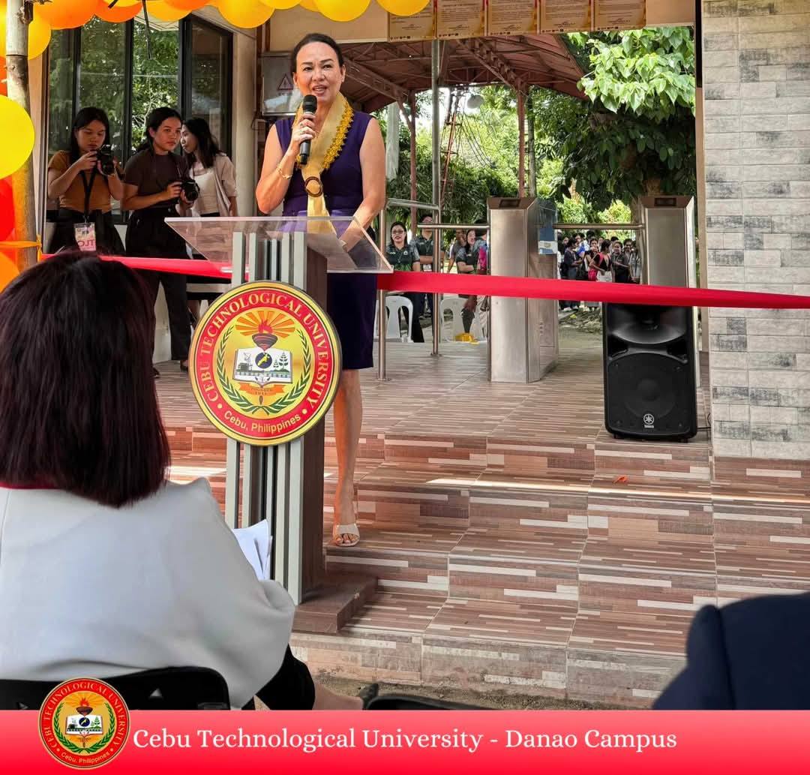

Cebu Technological University-Danao Campus has gone high-tech with a new RFID system, launched on September 18th. The system will improve campus security, streamline attendance tracking, and create a more efficient environment for students, faculty, and staff. Campus leaders and local officials hailed this initiative as a major step forward for the university, highlighting its commitment to innovation and technology. Globe Telecom, a partner in this project, emphasized their dedication to empowering education through technology.
Cebu Technological University-Danao Campus has gone high-tech with its new Radio Frequency Identification (RFID) system, making the daily routine of entering and leaving the campus a breeze. But how does this new system actually work?
Swiping in:
1. Get Your RFID Card: Every student and staff member has been issued a unique RFID card. This card is like your personal key to the campus.
2. Approach the Gate: As you arrive at the gate, simply approach the RFID reader.
3. Swipe Your Card: Hold your RFID card close to the reader and swipe it gently.
4. Access Granted: The reader will recognize your card and grant you access to the campus. The gate will open, and you're in!
Swiping out:
1. Approach the Gate: When you're ready to leave the campus, simply approach the same RFID reader at the gate.
2. Swipe Your Card: Hold your RFID card close to the reader and swipe it gently.
3. Access Granted: The reader will recognize your card and grant you access to leave the campus. The gate will open, and you're on your way!


The new RFID system is a welcome addition to CebuTech Danao, making campus life more convenient, secure, and efficient for everyone. So next time you're heading to class or leaving for the day, just remember to swipe your card and enjoy the smooth transition!